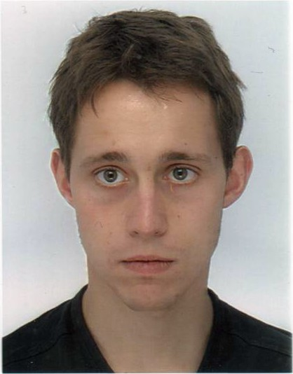

Clément Canonne
(Error 418: I'm a teapot.)
Contact information
- orcid
-
 https://orcid.org/0000-0001-7153-5211
https://orcid.org/0000-0001-7153-5211
- ccanonne@cs.columbia.edu
- Mailing address
-
J12 — School of Computer Science Building
Room 426
The University of Sydney
NSW 2006 Australia
About me
I am a Lecturer in the School of Computer Science of the University of Sydney. Prior to that, I was a postdoc first in the Stanford Theory Group, then at IBM Research Almaden. Even prior to that, I obtained my Ph.D. from the Computer Science department of Columbia University, where I was advised by Prof. Rocco Servedio. Long ago, in a distant land, I received a M.Sc. in Computer Science from the Parisian Master of Research in Computer Science, and an engineering degree from one of France's "Grand Schools," the Ecole Centrale Paris.
Here is a link to my résumé (updated 01/20/2021).Research Interests
My main areas of study are property testing (with a focus on distribution testing), learning theory, and, more generally, randomized algorithms and the theory of machine learning. One of my current focuses is on understanding the computational aspects of learning and statistical inference subject to various resource or information constraints.
Papers
Unless explicitly specified otherwise, authorships are in alphabetical order, as is customary in theoretical computer science.
- General lower bounds for interactive high-dimensional estimation under information constraints ([arXiv:2010.06562])
- J. Acharya, C. Canonne, and H. Tyagi
- Manuscript, 2020.
- Interactive Inference under Information Constraints ([arXiv:2007.10976])
- J. Acharya, C. Canonne, Y. Liu, Z. Sun, and H. Tyagi
- Manuscript, 2020.
- Robust quantum minimum finding with an application to hypothesis selection ([arXiv:2003.11777])
- Y. Quek, C. Canonne, and P. Rebentrost (Contribution order)
- Manuscript, 2020.
- Random Restrictions of High-Dimensional Distributions and Uniformity Testing with Subcube Conditioning ([arXiv:1911.07357, ECCC TR19-165], [slides])
- C. Canonne, X. Chen, G. Kamath, A. Levi, and E. Waingarten
- 32nd ACM-SIAM Symposium on Discrete Algorithms (SODA), 2021.
- The Discrete Gaussian for Differential Privacy ([arXiv:2004.000010, code])
- C. Canonne, G. Kamath, and T. Steinke
- Advances in Neural Information Processing Systems 33 (NeurIPS), 2020.
- Presented at the CCS 2020 Workshop on Theory and Practice of Differential Privacy (TPDP 2020).
- Private Identity Testing for High-Dimensional Distributions ([arXiv:1905.11947])
- C. Canonne, G. Kamath, A. McMillan, J. Ullman, and L. Zakynthinou
- Advances in Neural Information Processing Systems 33 (NeurIPS), 2020 (Spotlight).
- Presented at the CCS 2019 Workshop on Theory and Practice of Differential Privacy (TPDP 2019), and accepted to the Privacy in Machine Learning (PriML) workshop of NeurIPS 2019.
- Testing Data Binnings ([arXiv:2004.12893, ECCC TR20-062])
- C. Canonne and K. Wimmer
- 24th International Conference on Randomization and Computation (RANDOM), 2020.
- Distributed Signal Detection under Communication Constraints ([video])
- J. Acharya, C. Canonne, and H. Tyagi
- 33rd Annual Conference on Learning Theory (COLT), 2020.
- Domain Compression and its Application to Randomness-Optimal Distributed Goodness-of-Fit ([arXiv:1907.08743],[ECCC TR19-098], [slides])
- J. Acharya, C. Canonne, Y. Han, Z. Sun, and H. Tyagi
- 33rd Annual Conference on Learning Theory (COLT), 2020.
- Learning from satisfying assignments under continuous distributions
- C. Canonne, A. De, and R. Servedio
- 31st ACM-SIAM Symposium on Discrete Algorithms (SODA), 2020.
- Finding monotone patterns in sublinear time [arXiv:1910.01749, ECCC TR19-134]
- O. Ben-Eliezer, C. Canonne, S. Letzter, and E. Waingarten
- 60th Annual Symposium on Foundations of Computer Science (FOCS), 2019.
- Featured in Oded Goldreich's Choices.
- Inference under Information Constraints III: Local Privacy Constraints
- J. Acharya, C. Canonne, C. Freitag, Z. Sun, and H. Tyagi
- IEEE Journal on Selected Areas in Information Theory (JSAIT), Special Issue on Privacy and Security of Information Systems, 2021. (To appear)
- Journal version of the AISTATS'19 paper below, Test without Trust: Optimal Locally Private Distribution Testing, which it extends and supersedes.
- Inference under Information Constraints II: Communication Constraints and Shared Randomness ([slides])
- J. Acharya, C. Canonne, and H. Tyagi
- IEEE Transactions on Information Theory, 66(12), 2020.
- Conference version in 2019 International Conference on Machine Learning (ICML), 2019. (Long oral.)
- See also the preprint Distributed Simulation and Distributed Inference ([arXiv:1804:06952,ECCC TR18-079]), a preliminary but somewhat different version of this work.
- Inference under Information Constraints I: Lower Bounds from Chi-Square Contraction ([video], [slides])
- J. Acharya, C. Canonne, and H. Tyagi
- IEEE Transactions on Information Theory, 66(12), 2020.
- Conference version in 32nd Annual Conference on Learning Theory (COLT), 2019.
- See also the video of the talk given by H. Tyagi on the Shannon Channel.
- The Structure of Optimal Private Tests for Simple Hypotheses
- C. Canonne, G. Kamath, A. McMillan, A. Smith, and J. Ullman
- 51st ACM Symposium on Theory of Computing (STOC), 2019.
- Test without Trust: Optimal Locally Private Distribution Testing
- J. Acharya, C. Canonne, C. Freitag, and H. Tyagi
- 22nd International Conference on Artificial Intelligence and Statistics (AISTATS), 2019.
- Presented at the 2018 Workshop on Theory and Practice of Differential Privacy (TPDP 2018).
- Testing for Families of Distributions via the Fourier Transform ([arXiv:1706:05738, [ECCC TR17-075], [slides])
- C. Canonne, I. Diakonikolas, and A. Stewart
- Advances in Neural Information Processing Systems 31 (NeurIPS), 2018.
- Testing Conditional Independence of Discrete Distributions ([slides])
- C. Canonne, I. Diakonikolas, D. Kane, and A. Stewart
- 50th ACM Symposium on Theory of Computing (STOC), 2018.
- Improved Bounds for Testing Forbidden Order Patterns
- O. Ben-Eliezer and C. Canonne
- 29th Annual ACM-SIAM Symposium on Discrete Algorithms (SODA), 2018.
- Tolerant Junta Testing and the Connection to Submodular Optimization and Function Isomorphism ([ECCC TR16-105])
- E. Blais, C. Canonne, T. Eden, A. Levi, and D. Ron
- ACM Transactions on Computation Theory (TOCT), 11(4), 2019.
- Conference version in 29th Annual ACM-SIAM Symposium on Discrete Algorithms (SODA), 2018.
- Generalized Uniformity Testing ([slides], [video])
- T. Batu and C. Canonne
- 58th Annual Symposium on Foundations of Computer Science (FOCS), 2017.
- Distribution Testing Lower Bounds via Reductions from Communication Complexity ([ECCC TR16-168], [slides])
- E. Blais, C. Canonne, and T. Gur
- ACM Transactions on Computation Theory (TOCT), 11(2), 2019.
- Conference version in Computational Complexity Conference (CCC), 2017.
- Featured in Oded Goldreich's Choices.
- An Adaptivity Hierarchy Theorem for Property Testing ([ECCC TR17-029, arXiv:1702.05678], [slides])
- C. Canonne and T. Gur
- computational complexity, 27(4), 2018.
- Conference version in Computational Complexity Conference (CCC), 2017.
- Testing Bayesian Networks
- C. Canonne, I. Diakonikolas, D. Kane, and A. Stewart
- IEEE Transactions on Information Theory, 66(5), 2020.
- Conference version in 30th Annual Conference on Learning Theory (COLT), 2017.
- Testing k-Monotonicity: the Rise and Fall of Boolean Functions ([ECCC TR16-136], [slides])
- C. Canonne, E. Grigorescu, S. Guo, A. Kumar, and K. Wimmer
- Theory of Computing, 15(1), 2019.
- Conference version in 8th Innovations in Theoretical Computer Science (ITCS), 2017.
- Sampling Correctors ([arXiv:1504.06544], [slides])
- C. Canonne, T. Gouleakis, and R. Rubinfeld
- SIAM Journal on Computing (SICOMP), 47(4), 2018.
- Conference version in 7th Innovations in Theoretical Computer Science (ITCS), 2016.
- Are Few Bins Enough: Testing Histogram Distributions ([ECCC TR15-160], [slides])
- C. Canonne
- 35th ACM Symposium on Principles of Database Systems (PODS), 2016.
- Testing Shape Restrictions of Discrete Distributions
- C. Canonne, I. Diakonikolas, T. Gouleakis, and R. Rubinfeld
- 33rd International Symposium on Theoretical Aspects of Computer Science (STACS), 2016.
- Invited to the Theory of Computing Systems Special Issue for STACS 2016.
- Featured in the MIT Theory of Computation Student Blog.
- Learning circuits with few negations ([ECCC TR14-144], [slides])
- E. Blais, C. Canonne, I. Oliveira, R. Servedio, and L.-Y. Tan
- 19th International Workshop on Randomization and Computation (RANDOM), 2015.
- A Chasm Between Identity and Equivalence Testing with Conditional Queries ([ECCC TR14-156], [slides])
- J. Acharya, C. Canonne, and G. Kamath
- 19th International Workshop on Randomization and Computation (RANDOM), 2015.
- Theory of Computing, 14(19), 2018.
- Featured in Oded Goldreich's Choices and Sublinear.info.
- Big Data on the Rise: Testing monotonicity of distributions ([slides])
- C. Canonne
- 42nd International Conference on Automata, Languages and Programming (ICALP), 2015.
- Adaptive Estimation in Weighted Group Testing
- J. Acharya, C. Canonne, and G. Kamath
- 2015 IEEE International Symposium on Information Theory (ISIT 2015).
- Communication with Imperfectly Shared Randomness ([ECCC TR14-153], [slides])
- C. Canonne, V. Guruswami, R. Meka, and M. Sudan
- IEEE Transactions on Information Theory, 63(10), 2017.
- Conference version in 6th Innovations in Theoretical Computer Science (ITCS), 2015.
- Testing probability distributions underlying aggregated data ([ECCC TR14-021], [slides])
- C. Canonne and R. Rubinfeld
- 41st International Conference on Automata, Languages and Programming (ICALP), 2014.
- Testing equivalence between distributions using conditional samples ([slides])
- C. Canonne, D. Ron, and R. Servedio
- 25th ACM-SIAM Symposium on Discrete Algorithms (SODA), 2014.
- Testing probability distributions using conditional samples ([ECCC TR12-155], [arXiv:1211.2664], [slides])
- C. Canonne, D. Ron, and R. Servedio.
- SIAM Journal on Computing (SICOMP), 44(3), 2015.
- Featured in Oded Goldreich's Choices.
Thesis
- Property Testing and Probability Distributions: New Techniques, New Models, and New Goals [slides, source, thesis commons]
- Ph.D. Thesis, 2017
Service
- Program Committee member:
- ITCS 2020, FOCS 2020, SODA 2021, ESA 2021 (Track A)
- Contributor to the Differential Privacy website, a hub for the differential privacy research community.
- Co-organizer of Foundations of Data Science Virtual Talk Series, an online seminar series on the theory of data science.
- Co-organizer of TCS+, an online seminar series in theoretical computer science.
- Co-editor of the Property Testing Review.
- Tutorial on "Lower Bounds for Statistical Inference in Distributed and Constrained Settings" [slides,video]
- Co-organized with Jayadev Acharya and Himanshu Tyagi at FOCS'20.
- Workshop on "A TCS Quiver" [slides]
- Co-organized with Gautam Kamath at FOCS'19.
- Workshop on "Frontiers in Distribution Testing" [slides,video]
- Co-organized with Gautam Kamath at FOCS'17.
- Workshop on "(Some) Orthogonal Polynomials and their Applications to TCS" [slides,video]
- Co-organized with Gautam Kamath at FOCS'16.
Surveys and expository notes
- A Survey on Distribution Testing: Your Data is Big. But is it Blue? ([ECCC TR15-063], [bib])
- Survey. Theory of Computing Library, Graduate Surveys 9, 2020 (DOI: 10.4086/toc.gs.2020.009).
- A short note on learning discrete distributions [arXiv:2002:11457]
- Technical thingy, 2020.
- A short note on Poisson tail bounds
- Technical thingy, 2017.
- A short note on Assouad and Le Cam's lemmata
- Technical thingy, 2015.
- Dompter les Distributions de Probabilité Géantes [FR]
- Translation of Taming Big Probability Distributions, by Ronitt Rubinfeld (DOI:10.1145/2331042.2331052).
Miscellaneous
I like this word. Miscellaneous.
- Weekly Twitter quiz
- Theoretical computer science, mathematics, and random nuggets.
- The Rise and Fall of Boolean Functions [slides]
- Presentation given at the University of Waterloo on May 16, 2016.
- Testing Classes of Distributions: General Approaches to Particular Problems [slides]
- Presentation given at Columbia University (October 2) and LIX (December 17), 2015.
- Learning circuits with few negations [slides]
- Presentation given at LIAFA on June 23, 2015.
- Communication with Imperfect Shared Randomness [slides]
- Presentation given at Columbia University (November 7), IBM T.J. Watson Research Center (November 19), 2014 (long version of the ITCS'15 talk).
- Testing probability distributions with more oracles [slides]
- Presentation given at Columbia University on February 7, 2014 (long version of the ICALP'14 talk).